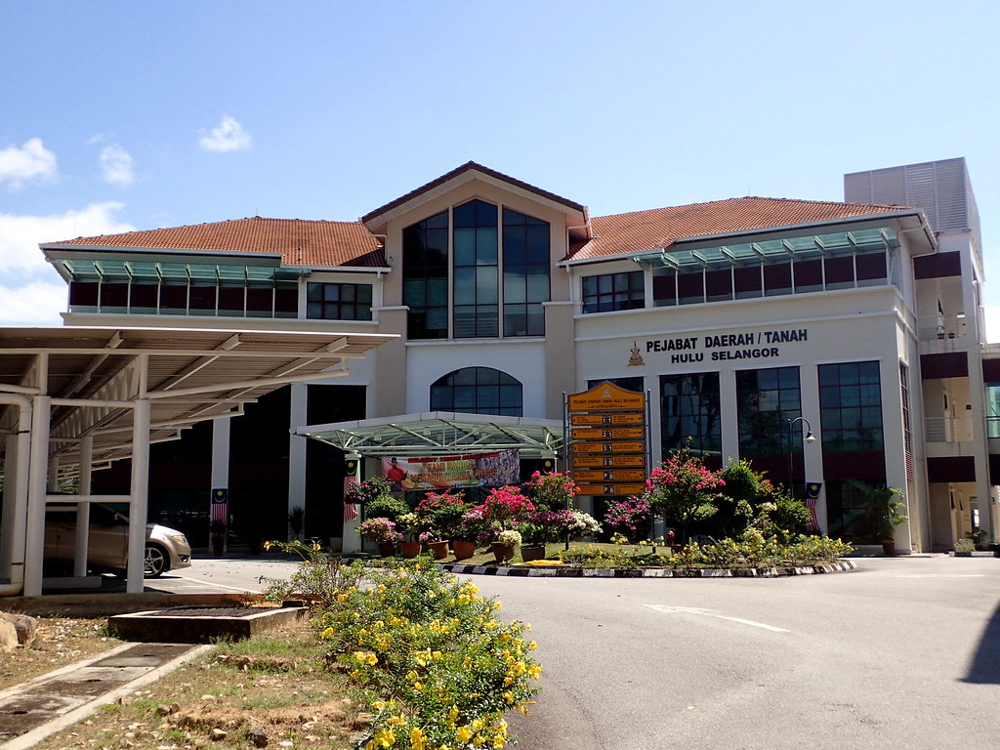
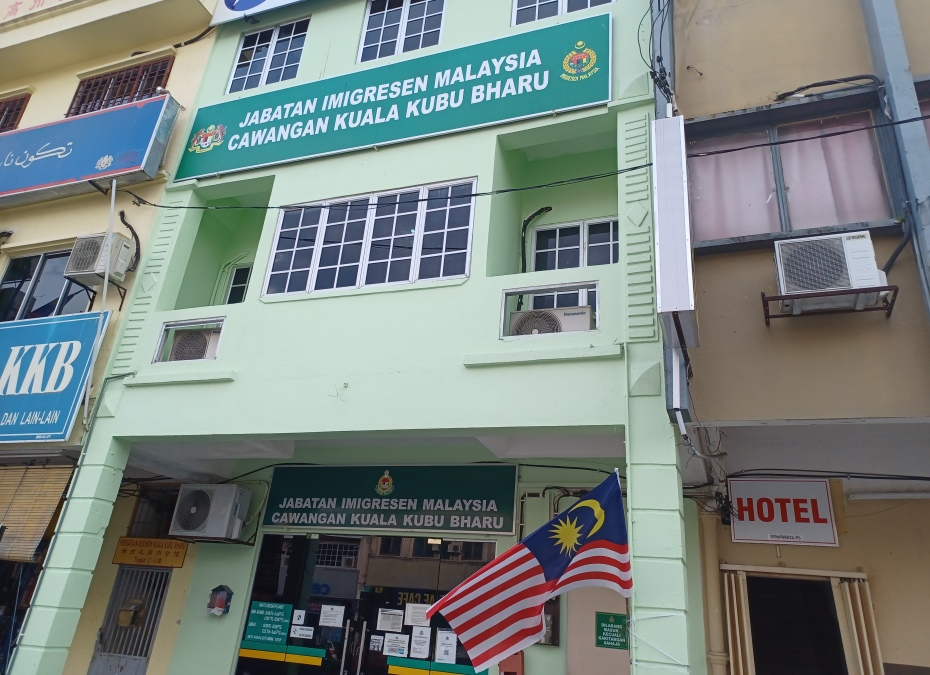
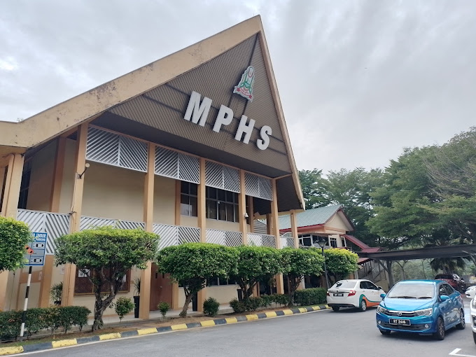

| THINGS IN KUALA KUBU BHARU | |
|  | District/Land Hulu Selangor Office Planning the development and use of land for agriculture, housing, business and so on in line with the current economic development and also provide information on land use and ownership for the people of Kuala Kubu Bharu.The office also manage the land grant and development process as well as transactions such as mortgages, title, leases and non-transactional processes such as caveats, modifications, court order reservations and so on. Daerah/Tanah Hulu Selangor 44000 Jalan Bukit Kerajaan, Kuala Kubu Bharu Selangor Darul Ehsan. Tel: 03-60641026 Fax : 03-60641160 Email : pdhs@selangor.gov.my |
|  | Imigration Office is one of the agencies under the Ministry of Home Affairs. It provides services to Malaysian citizens, Permanent Residents and Foreign Nationals visiting Malaysia. Apart from immigration control, one of the primary role of Kuala Kubu Bharu Immigration Office is accept and process of Malaysia passport application. The office also issues other travel documents. Pejabat Imigresen Kuala Kubu Bharu No. 51, Jalan Kamarudin 44000 Kuala Kubu Bharu Selangor Tel : 03-6065 1530 Fax : 03-6065 1598 |
|  | District Council The Hulu Selangor District Council is committed to implementing planning and Implementation Towards Making Municipal Administration Towards Making Hulu Selangor As A Low Carbon City In 2035. Various Initiatives Has been planned and structured to achieve the goal of making MDHS as Local Authorities That Support The State Government And Federation for the Implementation of Low Carbon Municipalities. MAJLIS PERBANDARAN HULU SELANGOR Jalan Bukit Kerajaan, 44000 Kuala Kubu Bharu, Selangor Darul Ehsan Email: webmaster@mphs.gov.my Office no.: 03-6064 1331 Fax: 03-6064 3991 |